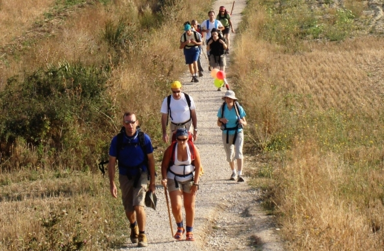
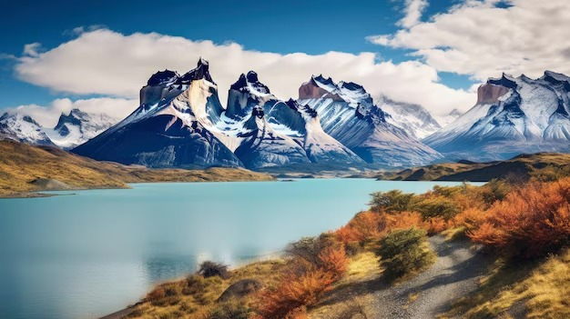
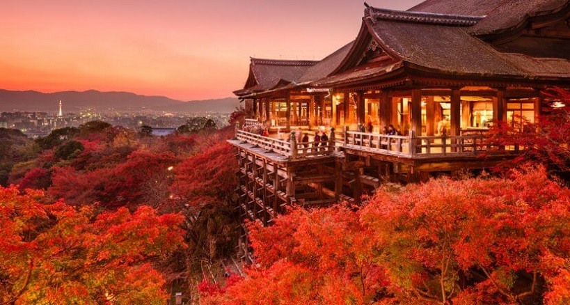
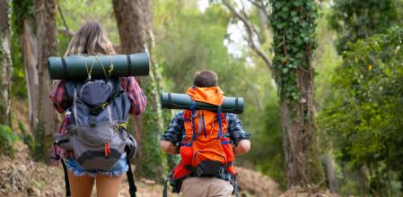
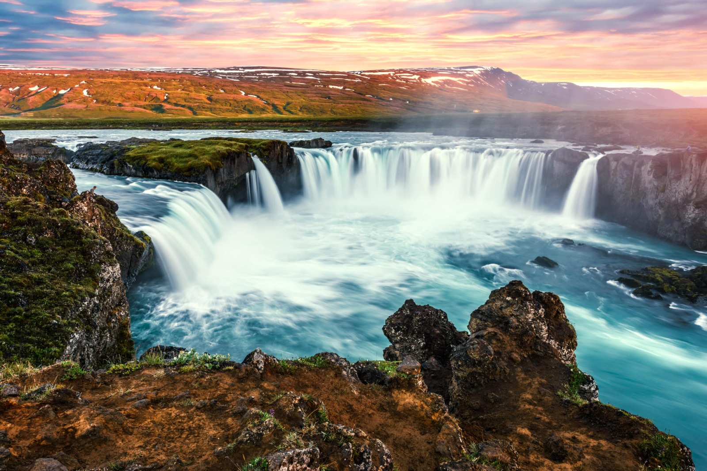

DESTINO EN SUEÑOS
Fecha: 11/07/2024
Destinos de Ensueño: Descubre las Maravillas de Islandia. Islandia es un país lleno de paisajes impresionantes. Entre sus maravillas naturales destacan la Laguna Azul, famosa por sus aguas termales y su entorno volcánico, la cascada Seljalandsfoss, donde puedes caminar detrás de la cortina de agua, y el Parque Nacional Thingvellir, un sitio histórico y geológicamente fascinante. Estos lugares ofrecen una experiencia única y son un deleite para los amantes de la naturaleza.
CONSEJO DE VIAJE
Fecha: 02/01/2024

Consejos de Viaje: 10 Consejos para Viajar con un Presupuesto Limitado Viajar sin gastar mucho es posible con algunos trucos sencillos. Reserva tus vuelos y alojamientos con anticipación para obtener mejores precios, utiliza transporte público en lugar de taxis, y considera alojarte en hostales o utilizar plataformas de intercambio de casas. Además, come en mercados locales en lugar de restaurantes turísticos y busca actividades gratuitas como museos con entrada libre o caminatas guiadas.
EXPERIENCIAS CULTURALES
Fecha: 11/07/2024
Experiencias Culturales: Sumérgete en la Cultura Japonesa Japón es un país rico en tradiciones y costumbres. No puedes perderte la ceremonia del té, una práctica antigua que simboliza paz y armonía. Durante la primavera, disfruta del Hanami, la observación de los cerezos en flor. Además, participa en un festival Matsuri, donde podrás ver desfiles, danzas y rituales que reflejan la cultura japonesa.
AVENTURAS AL AIRE LIBRE
Fecha: 11/07/2024
Aventuras al Aire Libre: Explorando los Senderos del Parque Nacional Torres del Paine El Parque Nacional Torres del Paine en Chile es un paraíso para los amantes del senderismo. Sus rutas ofrecen vistas espectaculares de montañas, lagos y glaciares. Algunas rutas populares incluyen el Circuito W y el Circuito O, cada una con su nivel de desafío y belleza. Es esencial prepararse adecuadamente y seguir los consejos de seguridad para disfrutar de una aventura segura y memorable.
GASTRONOMIA INTERNACIONAL
Fecha: 11/07/2024
Gastronomía Internacional: Saborea los Platos Típicos de Italia Italia es famosa por su deliciosa comida. Prueba la auténtica pizza margarita, la pasta fresca en sus múltiples variedades, y no olvides el gelato, un helado cremoso que es una delicia. Visita pequeños restaurantes locales y mercados para una experiencia gastronómica auténtica y descubre los sabores únicos que ofrece cada región italiana.
HISTORIAS DE VIAJEROS
Fecha: 11/07/2024
Historias de Viajeros: Mi Aventura en el Camino de Santiago Recorrer el Camino de Santiago es una experiencia transformadora. Este relato personal narra los desafíos y aprendizajes de un peregrino en su viaje hacia Santiago de Compostela. Desde las dificultades físicas hasta los momentos de reflexión y encuentro con otros peregrinos, el Camino ofrece una oportunidad única para el crecimiento personal y la conexión espiritual.